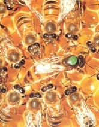
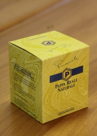

ローヤルゼリー
|  |
ミツバチからのロイヤルゼリーは、多くの自然な性質を持つ食品です。クイーンを餌にするためにハイブの内側に作られています。 長寿、繁殖力、女王の活動の面で労働者と女王の違いは、この特定の種類の食糧によるものです。 Apicoltura Pianaは最高の品質と保全を保証するために密封包装で管理され、選択された新鮮なローヤルゼリーを提供しています。 ロイヤルゼリーはタンパク質とビタミンの割合が高く、体にトーンを与えます。毎日300mgのローヤルゼリーを30〜60日間にわたって摂取すると、自然の食物バランスを維持するのに役立ちます。 |
|---|

フレッシュロイヤルゼリー - 10グラムのガラス瓶。 ポリスチレン包装